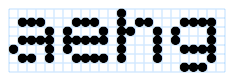
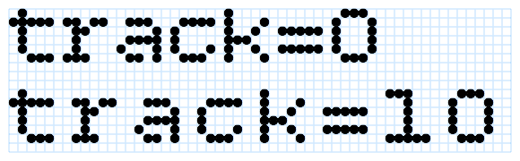
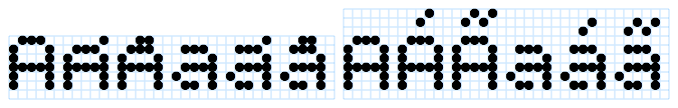
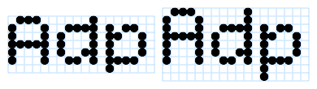
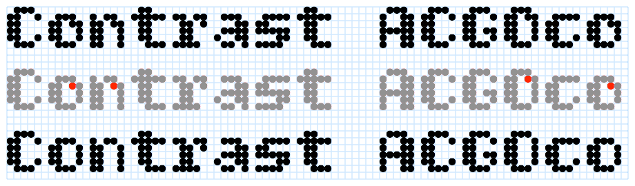
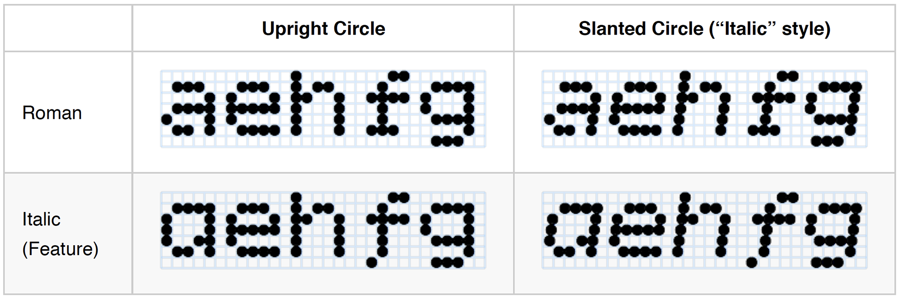
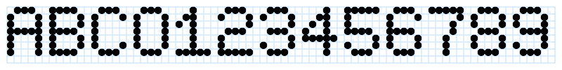
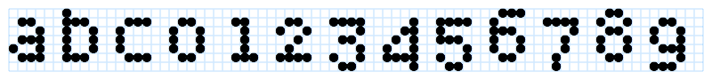
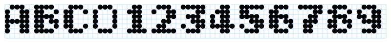

Bitcount is perfect for creating layered typographic effects using different colors and font styles. A slight shift in position creates shadows, highlights, and 3D effects. If you want to reproduce a certain combination on your own site, download Bitcount, copy the HTML/CSS, and integrate the code into your site. Or just keep playing!
To contribute, please see github.com/petrvanblokland/TYPETR-Bitcount.
Bitcount is a family of styles, where the core shape of letters has been reduced to the minimal number of pixels possible. We need at least 5 vertical pixels of x-height to draw “a” and “e”. Adding the minimum of 1 pixel as ascender and 1 pixel as descender, the minimum grid is 5 pixels wide and 7 pixel high. Here the Bitcount Single Regular is shown.
The large number of styles in the Bitcount family come from the virtually infinite amount of variations that are possible, even with this small amount of 35+ pixels. The styles vary in articulation of accent shapes, one or two pixel stems, roman or slanted, normal or condensed. And all of this with a range of pixels shapes, such as large/small circles and large/small squares. Here showing respectively Bitcount Single Regular Circle, Bitcount Double Regular Circle and Bitcount Single Regular Square.

In order to find the best selection of styles for a specific task, this “manual” is available, illustrated with a large number of examples.
And even Python/DrawBot programs are available for users who want to dive into it to that level of detail. E.g. to create similar animations to the ones shown in this manual.
There are many ways to use Bitcount. To name a few from practice:
Since most of the Bitcount letters within the same variant (Grid, Mono, or Prop) have identical spacing, they can be used in overlapping layers to create colorful decorative type.
Multiple layers of Bitcount generate an infinite amount of pixels shape combinations.
The animated examples give fast overview of possible combination, in plain or transparent colors.

For a whole letter this would look like this:
Here is an overview of 3 random layers. Each of these combinations can be used as pixel shape for any layer combination of Bitcount letters.

Example of Bitcount Grid Double with fixed height in 7 pixel grid display and fixed monospaced width of 6 pixels. Note the use of Bitcount Grid Double Italic to simulate the slanted delay of electronics in physical LED-displays with running text.
Example of Bitcount Prop Single with height of 10 pixels, with extended ascenders and descenders (by OpenType Features) and proportional spacing. Also here, Bitcount Prop Single Italic is used to slant the running text.
Weight variations can be made by altering the pixel size (or intensity), instead of adding more pixels. Although the 2-pixel contrast stem of the Double variant in this example could be interpreted as bold, it is compensated by using very small or light pixels.

There are three spacing variants in the Bitcount family: Grid, Mono and Prop. The variants Grid and Mono are “monospaced”, all letters have the same width of 6 pixels. Since letters as “l” and “i” normally need less spacing, the fixed width is bridged by adding serifs where necessary, although the basics of Bitcount is sans-serif. In the Prop variant all letters have their own widths, dependent on the space they need, but all widths are rounded to whole pixels distances.

The internal measures of the font is defined in a way that it is easy to measure. Each pixel has a distance of 100 units of the total 1000 units of the Em-square. This means that the width of a pixel (and thus of the spacing) is 1/10 of the font size. This way tracking can be calculated. For each extra pixel to the spacing of letters, Adobe InDesign needs a tracking of 10.
Since the Grid and Mono are monospaced variants, by definition they cannot have any kerning. All letters in all combinations have a width of 6 pixels. That is different in the Prop variant. Letter combinations have their own kerning value, to optimize their spacing. In the design of Bitcount Prop all capital-capital combination have two pixels spacing, where capital-lowercase have a spacing of one pixel. This difference is solved by kerning.

As with spacing and tracking, all kerning is rounded to whole pixels. In traditional typographic spacing this may not always be exactly right, in the matrix-grid of Bitcount, the designed spacing is the “best possible”, given the limitations of the grid.
All letters in the Grid variant have a total height of not more than 7 pixels, one pixels for ascenders and one pixel for descenders. As it is impossible to express articulation in the shape of accents, they are all reduced to one or two pixels. The size of accented capitals it reduced to 5 pixels to accommodate the accent on top. This makes the capital shape identical to the small-caps. Here showing the accent letters “AÁÃaáã” using Grid and Mono on their grids of respectively 7 pixels and 10 pixel high.
In the Bitcount Mono and Prop variants capital, ascenders and descender heights can be extended using one or all of the stylistic OpenType Features Extended capital, Extended ascender and Extended descender.
Extending the capitals is made as a separate OT-feature, so the user can choose to make the capitals the same size as the ascenders (7 pixels), or use the set that is one pixels smaller (6 pixels).

The standard x-height for all Bitcount variants is 5 pixels.

The smallest proportions can be found in the Grid variant. Lowercase letters are mostly made with a grid of 5 x 5 pixels. In the standard grid of 5 x 7, that leaves room for one pixel ascender and one pixel descender.
Due to the nature of pixel letter in such low resolution, there is almost no freedom to express contrast in letterforms. The difference between thick and thin areas comes from the distance between close horizontal adjacent pixels (darker) and the larger distance between diagonal pixels (lighter). Often this happens in places where the contrast should be the other way around.
Within the limitations of what is possible:
Bitcount provides two ways of controlling the contrast. The variants Single and Double respectively have letters with one and two pixel stems. Although this difference can be interpreted and used as “Roman” and “Bold”, it is not necessarily the only usage. The Double (with more expression of the tick-thin relation on the right spot).

In Single variant there is an OT-Feature available to add a pixel where contrast is needed, especially in the diagonal connections. Of course this feature only works if there enough space, such as “O” and “C”.

In the Double variants is the feature selected by default. There the OT-Feature No contrast pixel is necessary to turn the contrast pixel off.
In the OT Feature Condensed selection, the extra contrast pixel is not available, due to the restriction of space.
The base package of Bitcount includes four sizes/weight for each unique pixel shape. There are five sizes of Circles (Light, Book, Regular, Medium and Bold) and there are five corresponding sizes of Square and Plus pixels. The Regular weight is by definition the size of pixels that exactly fit the grid of 100 units. Future releases of Bitcount packages will include more weights and shapes.

Due to the difference area coverage of Circles and Squares, their visual weight is not equal. This can also be used by the designer as an expression for typographic weight difference.

Within the range of similar pixels shapes the weights are relative. For the sake of consistency, the weight name refers to the size of the pixel, not the optical weight. This is best visible in the pixels where the inside is open. Here is an example of the Line Circle pixel variant by weight.

And here is an example of the Line Square pixel variant by weight.

Completing the types of pixels shapes in the basic package of Bitcount, this is the weight range of the Plus shape.

The line width and the size of all Plus pixels is adjusted to the size of the Line pixels. This gives the option to “cut” a cross from the other pixels, such as Line Circle and Square in multiple layers. Visualized in this animation of layers:
The Single variants implement an OT-Feature Condensed that does display much of the glyph set as condensed. For the monospaced Grid and Mono variants this means that one pixel is added to the right side of each letter, to keep the same monospaced width of 6 pixels. But the optically wider spacing is not a problem, especially when used is small sizes.

For the Prop variant it means that the condensed letters are spaced one pixel more narrow than the monospaced.

In Bitcount a separation is made between the italic (slanted) angle of the stems (defined by the selection of the font style), and the italic shapes of letters (by selecting the OpenType Feature). This means that all 4 combination are available to the user.
An alternative “g” is available as OT-Feature, but due to the complexity of the shape at low resolution, it is not made default for upright-roman (as it could have been in a regular type design).

The Circle pixel shapes are not altered when slanted. But the Square pixels (and others with straight sides) are using slanted versions of the pixel shape to make the stems appear to be slanted.

Both OT-Feature Lowercase to small-caps and Captial to small-caps are implemented for all Bitcount variants.
Conversion with Lowercase to small-caps looks like this for the Mono Single variant:

And like this for the Prop Single variant:

Conversion with OT-Feature Capital to small-caps looks like this:

Bitcount implements seven sets of figures for the Single variant and five sets for the Double variant. In the example image they are showing in order of:
Mono Single figures on fixed width of 6 pixels.

Mono Single condensed figures on fixed width of 6 pixels (using the OT-Feature Condensed).

Mono Single figures width extended height on fixed width of 6 pixels (using the OT-Feature Extended capitals).
Mono Single condensed figures extended height on fixed width of 6 pixels (using the OT-Feature combination Extended capitals and Condensed).

Mono Single lowercase figures on fixed width of 6 pixels (using the OT-Feature Lowercase figures).

Mono Single lowercase figures on fixed width of 6 pixels (using the OT-Feature combination Lowercase figures and Condensed).
Mono Single small-cap table figures on fixed width of 6 pixels (using the OT-Feature Lowercase to smallcaps).

Mono Single small-cap table figures on fixed width of 6 pixels (using the OT-Feature combination Lowercase to small-caps and Condensed).

Prop Single with OT-Feature Fraction enabled on proportional width. The use of fractions is limited in this low resolution of 2x4 pixels (where the only possible design option for the zero is two horizontal lines), but for completeness it is good to have the full characters set available in fonts like this. Also the readability of fractional figures is very much dependent on the context, the shape and size of the pixels. It is up to the designer to decide if usage is appropriate in a given situation.

Both Prop Single and Prop Double include the OT-feature tnum (table numbers), which will force the figures (and some related characters like valuta, period, and comma) to a fixed width of 6 pixels.

As the Double does not have a Condensed OT-feature, there is only four sets of figures.
Mono Double figures on fixed spacing width of 6 pixels.
Mono Double figures width extended height on fixed spacing width of 6 pixels (using the OT-Feature Extended capitals).

Mono Double small-cap table figures on fixed width of 6 pixels (using the OT-Feature Lowercase to smallcaps).

Prop Double with OT-Feature Fraction enabled on proportional width.

In all variant styles there are alternate slashed zeros available as OT-Feature zero.

In case the full set of pixels is need (e.g. as a background layer with LED’s that are on/off), there are several matrices available when the OT feature Ligature is turned on. The availability of the matrix depends on the variant. In the illustration respectively are shown /matrix57, /matrix58, /matrix68, /matrix610. Also the TYPETR logo is available /typetr.

Not all OpenType Features are available in every Bitcount variant. See the Reference for more details, specific per style.
The Bitcount project started in the late 70’s as an experiment to find the minimum amount of pixels necessary to define a full set of ASCII characters. Mainstream as that may seem today, it wasn’t at that time.

In the seventies, digital typefaces for printing were hidden deep inside commercial typesetting machines (starting as scanned photo negatives, not even as digital outline information). Or they were stored as bitmap in terminal screens. Resolution and speed were costly resources, so the bitmap was hardcoded into the screen electronics, often just for one size.
It was the general convention at that time, that for Latin, at least 9 pixels where necessary to make a clear distinction between ascenders (7), capitals (6), lowercase (5), and descenders (2). Furthermore, all letters needed to be monospaced, because there was no way pixels could be stored as in modern graphic screens. The shapes were generated by hardware during the sweep of scan-lines of the television screen. Proportional spacing would have added a lot more costly hardware.
The design of these pixel grids was exclusively the domain of engineering: Take a matrix and add pixels until it can be recognized as an “n”. The problem with this approach is that “contrast” seems like luxury, not worth considering (if such a thing was considered at all). The stems of such an “n” have a width of one pixel, vertical and horizontal equally spaced. But simple mathematics shows that if the horizontal distance between pixels is 1, the diagonal distance between points is 1.41, showing as a lighter area in the letter. The problem is in the resulting contrast in the diagonals.

This is not a problem where bows run in to stems, but on the top-right of the “n” it is a problem, because that is traditionally the darkest part of the letter shape. The contrast makes the difference between “n” and “h” 3 pixels, instead of the traditional one pixel. This compensates for the relative small ascender length of only one pixel.

Early sketches of the 5 x 7 pixel grid show that even in a small design space of 35 pixels, the number of different options is enormous. Note the various alternatives for the “m”, to make it fit in the impossible width of 5 pixels. It is common understanding in design, that what first seems to be an extreme reduction of design options, in reality still needs a design process to find the best choice. Or to create alternative solutions that work just as well or better.